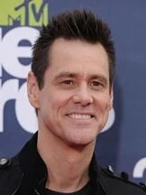
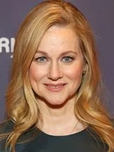
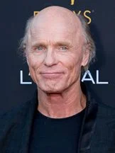
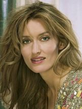
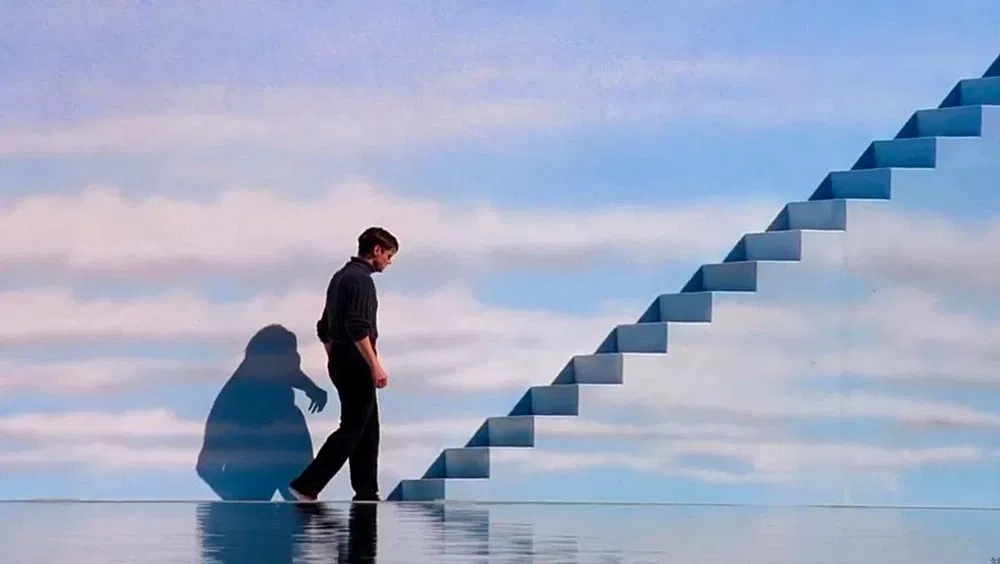
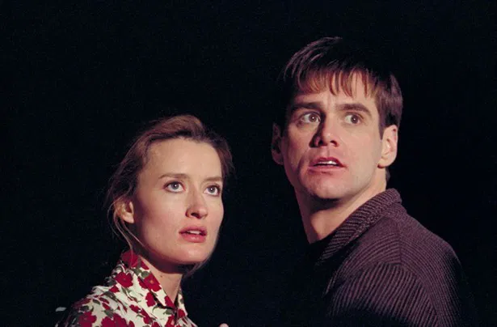

Sinopse
Truman Burbank (Jim Carrey) é um pacato vendedor de seguros que leva um vida simples com sua esposa Meryl Burbank (Laura Linney). Porém algumas coisas ao seu redor fazem com que ele passe a estranhar sua cidade, seus supostos amigos e até sua mulher. Após conhecer a misteriosa Lauren (Natascha McElhone), ele fica intrigado e acaba descobrindo que toda sua vida foi monitorada por câmeras e transmitida em rede nacional.
Trailer
Elenco

Jim Carrey
Truman Burbank

Laura Linney
Meryl

Ed Harris
Christof

Natascha McElhone
Lauren
Curiosidade
Inovador para sua Época: Lançado em 1998, "O Show de Truman" foi um dos primeiros filmes a abordar o conceito de reality shows e a privacidade da vida pessoal, antecipando as discussões que se tornariam comuns na era das redes sociais e da televisão de realidade.
Deixe sua Opinião
Galeria de Imagens

